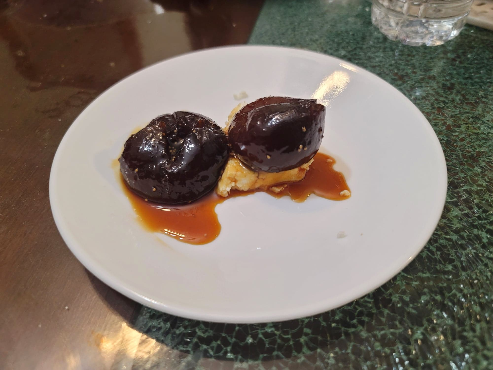

Dulce de Higos

Ingredients:
- 2 lb Figs
- 1 1/2 lb Panela
- 1/8 tsp Baking soda
- 2 Cloves
- 1 stick Cinnamon
- 5 cups Water + more as needed
Instructions:
- Cut a small "X" on the top of each fig. Place into a large bowl with water to cover and let sit in the fridge overnight.
- The next day, drain the figs from the water. Place into a pot with new water to cover and mix in the baking soda. Bring to a boil over medium heat and let cook until softened, about 15-20 minutes.
- Strain out the water and discard. Set aside the figs. Add the 5 cups of water, cloves, cinnamon, and the panela to the pot. Heat over low heat until the sugar is completely dissolved.
- Add the figs back to the pot. Continue to cook over low heat for at least 3 hours, stirring occasionally, or until the syrup has reduced to preference.
- Remove from the heat and optionally can in jars. Serve warm or cold with some fresh cheese like queso fresco, mozzarella, or farmer's cheese.